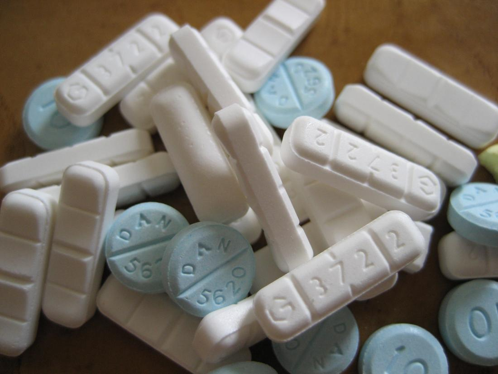
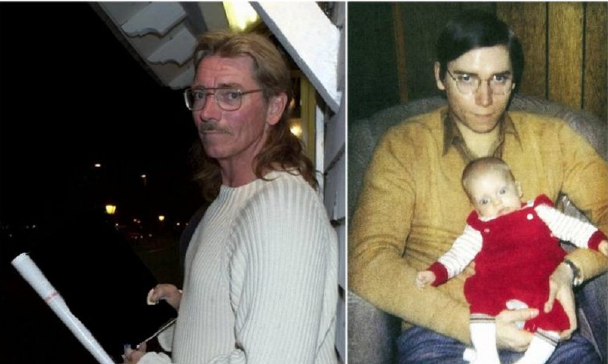
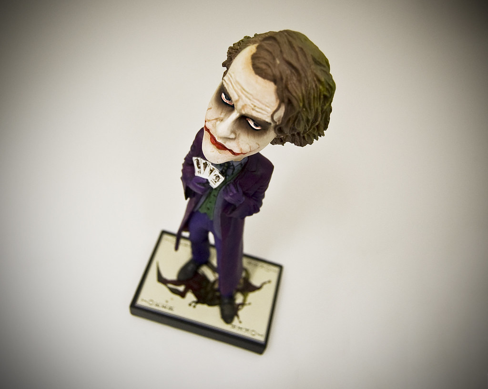
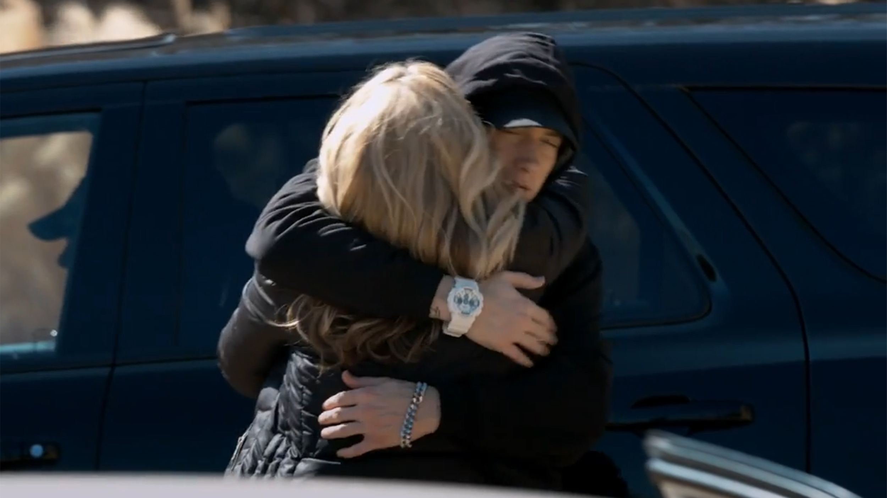

Un environnement familial difficile

Sortie en 2002 dans l’album « The Eminem Show », le son Cleanin’ Out My Closet a fait énormément de bruit du fait des paroles très dur dîtes par Eminem à l’encontre des membres de sa famille, notamment sa mère. Le son est divisé en 2 parties : 1) les manifestations contre les paroles dans ses musiques 2) la colère qu’il ressent depuis petit et ses raisons.
Dans la première partie, Eminem évoque donc le fait qu’il est victime de multiples attaques de personnes vis-à-vis des paroles qui sont assez rudes et violentes à encaisser pour certains individus. Il dit d’ailleurs que la plupart du temps les gens l’attaques sur le fait qu’il est des propos qui sont homophobes, antiféminismes… Ce qu’il le touche particulièrement par rapport à ces attaques est que les médias le condamnent à être le seul responsable de la violence des jeunes dans les ghettos. Enfin, afin de rationaliser la colère des personnes à l’encontre de ses paroles, il assume simplement que les gens ses paroles sont « sincères » et « remplies de vérités » ce qui énervent certaines personnes.
Dans la deuxième partie, il évoque des détails très précis de sa vie qu’ils l’ont marqués. Ces détails mettent en scène les différents membres de sa famille qu’il évoque soit avec de la haine soit avec de l’amour. Tout d’abord, c’est avec colère et dégoût qu’Eminem évoque son père qui a quitté le cocon familial alors qu’il n’avait que 1 an. En effet, Eminem l’accuse d’être la principale cause de tous les problèmes qui sont arrivés à sa famille pendant longtemps. Après toutes cette haine dégagée, on sent énormément d’amour lorsqu’Eminem parle de sa fille. Il ne conçoit même pas de vivre sans sa présence. On peut ressentir de la tristesse tellement l’amour envers sa fille est puissant. Contrairement à ce qu’il ressent pour sa fille, Eminem éprouve une forte haine à l’encontre de sa mère. En effet, il l’a décrit comme étant la source de ses problèmes mentaux puisqu’elle le maltraitait mentalement tous les jours. Il évoque également le problème de drogue récurrent chez sa mère ce qui a causé de nombreuses disputes entre eux deux et qui à également créer de la distance entre eux. Bien que sa mère ait essayée rompre cette distance en lui offrant un CD, il pense ne plus jamais ressentir un sentiment conflictuel avec sa mère. La haine envers sa mère est tellement forte qu’il va même jusqu’à dire que sa fille Hailie ne sera présente aux funérailles de sa mère. Cependant, la mère d’Eminem n’est pas la seule personne avec qui il ressent du « dégoût ». En effet, il entretient une relation assez particulière avec sa femme Kim. Les problèmes de drogues de Kim ont également détruit leur relation. En effet, sa haine va même le pousser à avoir des propos très violent à son encontre : « I’da l’a tué, merde j’aurais tiré sur Kim et lui tous les deux ». De plus, on note ici qu’Emine utilise « tous les deux » et fait référence au fait que Kim trompait Eminem ce qui a accentué cette haine envers elle. On voit donc à travers cette musique qu’Eminem a été tourmenté mentalement et physiquement par les différents comportements et actes des membres de sa famille.
Pour comprendre plus précisément le sens de cette musique, il faut revenir sur certaines paroles qui en disent long sur son caractère vis-à-vis de certains évènements :
« Look at me now; I bet ya probably sick of me now ain’t you momma? I’mma make you look so ridiculous now »
On voit qu’ici Eminem porte des excuses auprès de sa mère et avoue qu’il ne voulait pas la blesser ni la faire pleurer. Ces aveux lui permettent de libérer son cœur du poids qu’il porte depuis des années.
« I was a baby, maybe I was just a couple of months My faggot father must have had his panties up in a bunch »
Ici Eminem fait référence à l’abandon de son père lorsqu’il avait seulement 1 an et accentue sa lâcheté en assurant qu’il ne fera jamais la même à sa fille Hailie bien qu’il soit en embrouille avec son ex-femme.
« See what hurts me the most is you won’t admit you was wrong Bitch do your song – keep telling yourself that you was a mom! But how dare you try to take what you didn’t help me to get »
Eminem nous montre ici le point destructeur de la relation entre lui et sa mère : sa mère a dit qu’elle aurait préferé qu’Eminem meurt à la place de Ronnie, oncle et meilleur ami d’Eminem mort en 1991 à la suite d’un suicide. C’est à la suite de ces paroles qu’Eminem arrêta de considérer sa mère et essaya de l’oublier à vie.
BOUBEKRI Anass

Comme le suggère son nom my mom (ma mère en français) parle de la mère d’Eminem et s’ajoute à une longue liste de titres virulents vis-à-vis d’elle. Dans ce titre Eminem parle plus particulièrement des problèmes d’addiction de sa mère et comment sa a pu impacter sa vie en tant que fils et en tant que toxicomane.
Il commence sa chanson par le refrain et annonce tout de suite la couleur : sa mère était une toxicomane et c’est pour ça qu’il en est un aussi. Dans le premier couplet, Eminem rappelle que ce n’est pas la première fois qu’il parle de sa mère mais cette fois ci il va raconter comment il est devenu accro au Valium comme sa mère lorsqu’il était jeune. A l’époque la drogue prenait une telle place qu’elle était partout chez lui et accuse même sa mère d’en avoir mis dans sa nourriture le rendant malade chaque jour.
Eminem était également mauvais à l’école, il a même raté 3 fois le 9th grade (équivalent de la troisième c’est-à-dire à 14-15 ans). Cependant peu importe les mauvaises notes qu’il avait il arrivait toujours être bon en anglais. A cette époque, ces professeurs pensaient même qu’il se droguait en inhalant de l’éther ou en fumant de la marijuana.
I found that no matter how bad I was at school, like, and no matter how low my grades might have been at some times, I always was good at English … I just felt like I wanna be able to have all of these words at my disposal, in my vocabulary at all times whenever I need to pull ‘em out.
Dans le couplet qui suit, Eminem raconte de quoi étaient composés ses repas et ses querelles avec sa mère a ce propos. Elle lui propose du diluant à peinture en guise de diner ainsi qu’une assiette d’analgésiques mais également du Valium dans ses pommes de terre. Puisque ça ne lui plait pas avant même d’avoir gouter, elle le menace et l’encourage vivement à lécher son assiette afin de ne pas faire de gâchis. Il a même intérêt à mettre sa tête dedans avant qu’elle l’enferme dans le sous-sol encore une fois et le laissera être pointilleux jusqu’au prochain Thanksgiving s’il le faut et s’il ne le finit toujours pas il aura droit à la même chose.
Eminem mentionne ensuite la pension alimentaire que son père devait payer. En effet, le père de Marshall Mathers est parti très tôt du foyer. La mère d’Eminem affirmant qu’il a abandonné sa famille et son père rétorquent que c’est sa mère qui s’est enfuit avec son fils. Quoiqu’il en soit, le père de Marshall devait payer une pension alimentaire suite au divorce. Dans cette partie de la chanson Eminem accuse ici sa mère de ne pas utiliser la pension pour son fils mais bien pour payer sa drogue. Cependant, sa mère raconte dans le livre qu’elle a sorti qu’elle devait recevoir 60 dollars par mois de pension mais que son ex-mari n’a payé que 2 ou 3 fois et qu’il s’est finalement enfui en Californie pour éviter de payer quoi que ce soit.
Eminem conclut par dire qu’il devrait laisser le passé derrière lui mais il ne peut simplement pas puisque sa mère est la raison à cause de laquelle c’est un toxicomane. Il ne pensait pas pouvoir être accro dépendant mais son passé à fini par le rattraper à cause de ses gènes ; maintenant il comprend ce que ça fait d’être dépendant et a de la compassion pour sa mère.
It never once hit me that drug addiction runs in my family. Now that I understand that I’m an addict, I definitely have compassion for my mother. I get it.
Eminem blâme aussi les médicaments car beaucoup peuvent être obtenu avec une simple prescription et les risques sont extrêmement élevés. Au final, Eminem finit par prendre les Xanax (prescrit légalement contre l’anxiété, les crises de panique et les insomnies il y a de grands risques d’addiction et d’overdose) et aller dormir aux cotes d’une boite de médicaments et une bobblehead (figurine) de Heath Ledger. La bobblehead fait bien sur référence à son état après avoir pris les médicaments mais Eminem étant un fan de Comic Book il pense ici à Heath Ledger l’acteur qui joue le Joker dans le film Batman : TheDark Knight. Cependant, Heath Ledger souffrait lui aussi d’insomnies et ce notamment durant le tournage du film et lui aussi a abusé des médicaments. Il a malheureusement succombé à son overdose en janvier 2008, un mois après celle d’Eminem.
Pour conclure, cette triste chanson raconte la relation qu’Eminem avait avec sa mère toxicomane ainsi que la relation qu’ils avaient tous les deux vis-à-vis des drogues. Au final, malgré la relation conflictuelle qu’entretenait Eminem avec sa mère, les insultes qu’il a pu lui porter, les paroles qu’il a pu écrire, les procès qu’elle a pu tenter, les livres et chansons qu’elle a sorti ; il finira tout de même par s’excuser (pour Cleaning out my closet notamment) avec le titre Headlights qui a été tourné à Detroit (la ville dont il est originaire) sous la direction de Spike Lee. Ce clip sortira notamment lors de la fête des mères américaine le 11 mai 2014. On peut apercevoir la mère d’Eminem en vue subjective qui essaie de renouer un lien avec son fils et ils finissent même par se prendre dans les bras à la fin du clip.
AYACHI Hassina